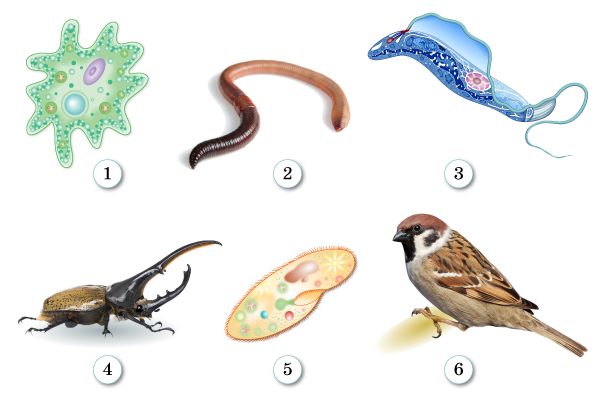

Задание 1. Признаки живых организмов
Распределите по группам признаки, характерные для живых организмов (перетаскивайте плашки в сокеты).
активное передвижение
ограниченный рост
автотрофы
в клетке пластиды
рост и развитие
не перемещаются в пространстве
гетеротрофы
раздражимость
оболочка клетки содержит целлюлозу
оболочка клетки не содержит целлюлозу
дышат кислородом
фотосинтез
растут всю жизнь
размножение
обмен веществ
клеточное строение
Общие признаки живых организмов
Признаки растений
Признаки животных
Задание 2. Животные природных зон
Распределите животных по группам согласно их обитанию в природных зонах.
лемминги
северный олень
заяц
волк
суслик
бурый медведь
песец
лисица корсак
соболь
заяц-беляк
заяц-песчаник
росомаха
белка
тушканчик
джейран
верблюд
Пустыни и полупустыни
Тайга
Тундра
Задание 3. Структурная организация организма
Прочитайте текст. Вставьте вместо пропусков подходящие по смыслу верные биологические термины.
Организм животного состоит из множества клеток, которые различны как по строению, так и по выполняемым функциям. Сходные клетки в их организме объединены в
, в связи с выполнением какой-либо определённой задачи. Каждая ткань работает как единая функциональная единица. Для выполнения определённых задач ткани объединяются в
, а органы — в
, которые взаимосвязаны. У многоклеточных животных есть сложные системы органов, которых нет у других живых организмов. Это
, выделительная, кровеносная, дыхательная, половая, нервная системы и органы чувств.
Организм любого животного является , в которой все части взаимосвязаны и согласованно выполняют жизненные функции: , раздражимость, движение, размножение.
Организм любого животного является , в которой все части взаимосвязаны и согласованно выполняют жизненные функции: , раздражимость, движение, размножение.
Задание 4. Симметрия тела
Выбери строку с верным ответом, где только перечислены животные с радиальной (лучевой) симметрией тела:
Задание 5. Одноклеточные животные
Выбери строку с верным ответом, где стоят цифры, обозначающие одноклеточных животных.
